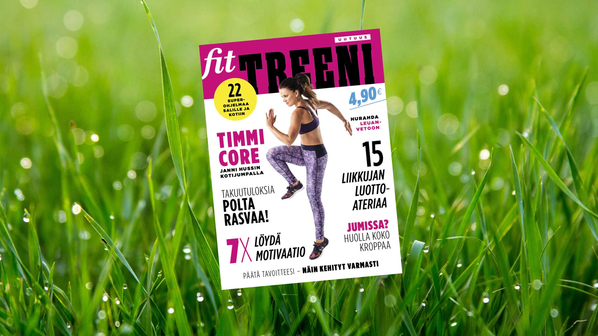

Iris Mark
Visual Designer &
Web Developer

Project 1: Fit Treeni

Managing the proces of these special editions from start to finish. Visual concept, which had to be different than the regular magazine, but still recognizable as 'Fit'. Responsible for photo shoots, layouts and delivery to the printing house.
Project 2: Localization versions

Overseeing the consistency of translated elements and take in account the local customs. Making layouts as close as possible to the master, which is a challenge with languages which translate up to 15% longer.
Project 3: Template building

Defining the structure, build and test templates for different magazines. Producing manuals and teaching end users how to use the system efficiently. Also giving technical support and making design changes when necessary.

Project 4: Website

Defining the structure and looks, build and test the usuabillity. Power of Dance festival is biennial and is lead by a non profit organization with a limited budget
Project 5: Banners

Producing series of banners for different magazines in all kinds of shapes and sizes. Some of them done ad hoc, others with a longer time span. The biggest challange was to us the same elements in totally different shapes.